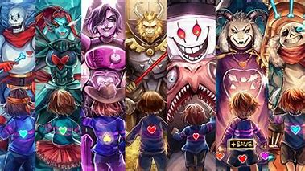

Undertale is a fun game with a multitude of choices and options but all lead to 1 of 3 possible endings Pacifist, Netural and genocide
In the pasifist route you go around in defeating monsters without killing anyone or anything
Where you only kill some of the monsters but not all of them you see certain things based
When you kill everyone and everything on throught all of undertale
